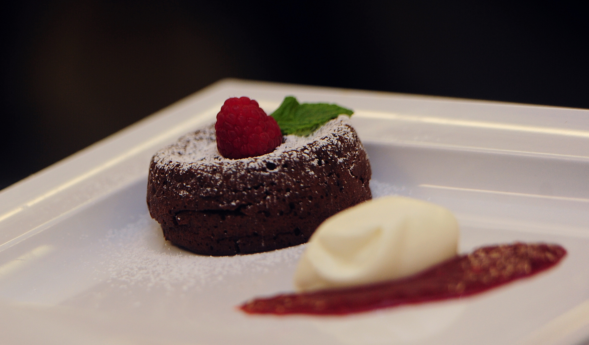

Super Moist Carrot Cake
Super Moist Carrot Cake
Ingredients
- 8 1/2 oz. Almond Meal
- 8 1/2 oz. Brown Sugar
- 8 1/2 Carrots,grated
- 3 Eggs
- 1/2 cup Peanut Oil or Vegetable Oil
How to Make It
- Preheat your oven with a baking sheet on the middle shelf
to 180C (350F).
- Line a 8 inch spring form cake tin with baking paper.
Grease the base and side with a little oil.
- In a large bowl, mix together the sugar and oil.
- Add eggs, one at a time mixing to combine. Stir in almond
meal and carrots.
- Pour cake mixture into the prepared tin and level off with
a spoon.
- Bake for 1 hour, or until the top is golden and feels firm to
the touch. Cool in the tin.

Little Chocolate Cakes
Ingredients
- 1 1/2 oz. Brown Sugar
- 1 1/2 oz. Butter
- 1 3/4 oz. Dark Chocolate, 70% cocoa solids
- 1 Egg, seperated
- Optional: Cream or Ice Cream, to serve
How to Make It
- Place a baking sheet or tray on the middle shelf of your oven. Preheat
to 180C (350F). Grease and line the bases of 2 x 1 cup capacity
ramekins.
- Whizz chocolate and sugar in a food processor until you have
coarse crumbs.
- Add butter, egg yolk and 2 tablespoons boiling water and whizz for
another few seconds, until well combined.
- Whisk egg white with a pinch of salt in a clean, dry bowl.
- Gently fold chocolate mixture into the white foam until only just
combined.
- Divide mixture gently between the prepared ramekins. Bake for 15 –
20 minutes or until the tops feel firm when touched with your finger.
- Cool then serve with cream or ice cream.
Cake Batter Milkshake
Ingredients
- 1/2 cup Cake Mix in flavor of your choice
- 2 cups Chocolate, Cookie Dough or Vanilla Ice Cream
- 1 cup Milk
- Whipped Cream or Dash of Cocoa Powder
How to Make It
- Blend milk, ice cream and cake mix in a Magic Bullet or blender until smooth and creamy. Or whisk this together by hand.
- Serve with whipped cream or sprinkle of cocoa powder.
 Chocolate Peanut Butter Banana Pops
Chocolate Peanut Butter Banana Pops
Ingredients
- 3 Bananas, sliced into thirds
- 1 cup of Chocolate Chips
- 2 tablespoons of Peanut Butter
- Other necessay items: Popsicle sticks and Wax Paper
How to Make It
- Cut the bananas into thirds after peeling. Gently push a popsicle stick into each banana piece.
- Lay the banana pops on wax paper and put them in the freezer while you complete steps 3-5.
- Combine the chocolate chips and peanut butter in a bowl. Microwave the combination until melted (Keep an eye on the mixture so you don’t burn it!). Stir until smooth.
- Pour the mixture into a tall drinking glass. Remove the bananas from the freezer.
- Dip each banana in the glass and coat it completely.
- Lay the bananas back down onto the wax paper and put them in the freezer. Remove after about 5 hours and enjoy!
2 Ingredient Pumpkin Cookies
Ingredients
- 1 can of Pumpkin
- 1 box of Spice Cake Mix
How to Make It
- Preheat oven to 350 degrees.
- Line baking sheet with parchment paper.
- Mix your pumpkin and cake mix together in a medium bowl until there are no more lumps.
- Drop by rounded tablespoon onto prepared baking sheets, about 2 inches apart.
- Bake for 13-15 minutes, until edges start to golden.
- Remove from oven and allow to cool 5 minutes on your baking sheet. Transfer to wire rack to finish cooling.
- Frost if desired.
 Go to top
Go to top